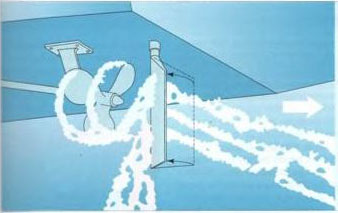

Grundsätzlich ist zwischen zwei recht unter-| »niedlichen Steuersystemen zu unterschei-1 den, dem Steuerpropeller und der Ruder Boote mit Außenborder cde> Z-Antneb werden durch direktes Umlenken der Propel-lerschubnchtung gesteuert. Das Heck dreh cahin, wohin oer vorausgenende Prcpelle schiebt oder der rückwartsgehende zieht Dadurch sind solche Boote seh' manövrierfähig auf engem Raum. Ein Ruder haben sie nicht.
O-rr Nachteil, le langsamer man fahrt, umso geringer wird die Steuerfahigkeit. Mit ausgekuppeltem Prooeller hort sie überhauo auf, weil der Schatt gar keine oder nur eine sehr geringe Ruderwirkung hat.
Bei Innenbc'dantheben mit starrer Welle wird zum Steuern das hinter dem Prope’ ler sitzende Ruderblatt gegen cen Propellerstrom angesteilt. Der dadurch auf das Ruderblatt ausgeubte Druck schiebt das Heck zur entgegengesetzten Seite hinüber Da aber nu- ein Teil des Propellerstromes für die Ruderwirkung ausgenutzt wer-
und das Steuern manchmal schwierig. Der Vorteil Mit einem Ruderblatt hat man so lange -Ruder im Schiff-, wie sich das Boot durchs Wasser fertbewegt. Also auch noch mit dem avsgekuppelten Propeller.
Ot« Steuerpropcller
Bcote Au Berbcrqer werden durch Schwenken des gesamten Moton gesteuert Boote «l i-Antneb durch Schwenken des Au Bew:<rdaggregats. Schlagt man ruch hnks em. druckt Ser Propellerschu O das Heck rach rechts (Steuerbord). Be' Ruckwktsfa M iwd, bei einem liwsesnsaiag, Ürs Heck «cm Propeller rach 'n«; (Backbord) gezogen. Dir «olle Ausnutzung des d rekt umqelerkten Propellerschebs ermöglicht, sehr enge kur.ee zu fahren.
Starre Welle Bit Ruder
Das Ruderblatt wird gegen den geradeaus geachteten Propellersucm inge.te'l L Es entsteh: em Staudruck, der das heck zur ent qegerqeset.'trn Seite druckt. Der Ausschlag des Hecks ist ader nie so stark >ie bet einem Steue Ttropeller. Deshalb ist cor Drehkrets-durchmesse' eines Ikc Xrs mit starrer Welle dann fach etwa doppelt sogro B. Anders s-n, es auf Yachten r.t zwei Maschinen aus. Durch Vorausgehen mit der einen urj Achteraus gehen mit der anderen lassen s*c sich »at der Stelle drehen.
kann, ist sie denn auch geringer als mit Steuerpropeiler. Bei Rückwärtsfahrt der Propelierstrom nach vorn gerich-Das Ruder reagiert allein auf die fahrt, das Boot durchs Wasser macht, kntspre-, schlecht ist denn auch die Rudermr-
Merke
Ein Boot dreht stets nach der Seite, auf der das Ruderblatt (oder der Steuerpropeller) liegt. Das gilt für Vorausfahrt ebenso wie für fahrt achteraus.
Feinfilter
Tankentlüftung mit
Schwanenhals und
Zündgitter
Etnspn U-lettungen
Rückleitung
hnt Ofttutwn mrt
zum Tank
[Abspeir’i.ihn
Brennstoff-
Förrferpumpe
Vorfrte»
Handpumpe nhebef
Tank
von Tank Schwa RHeche und Leitungen an '/ässe (Moto)

